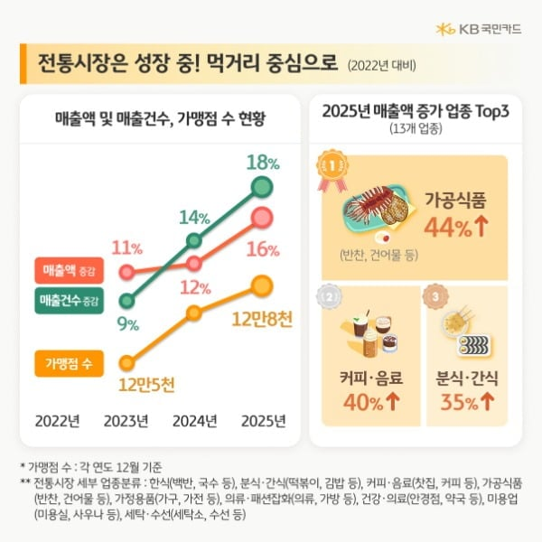
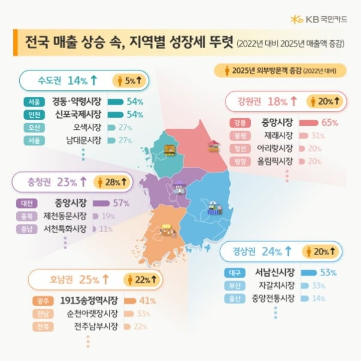
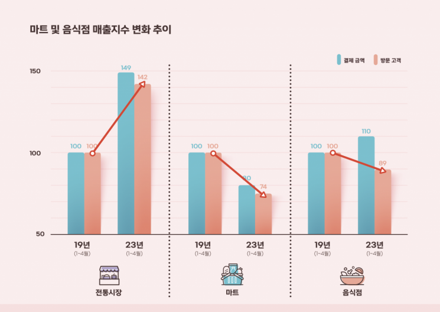
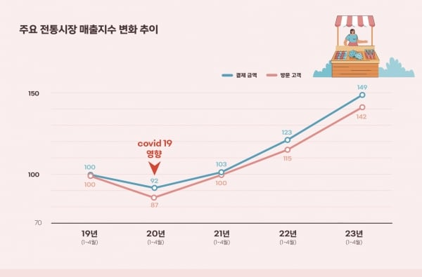
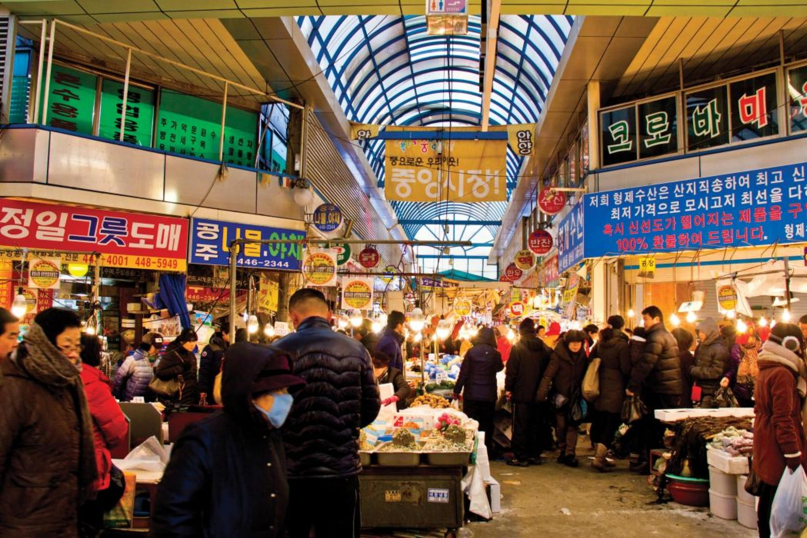
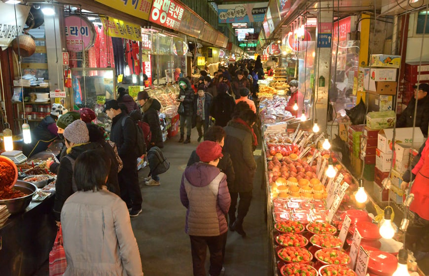

전통시장
요즘 전통시장 주말만 되면 사람으로 미어터짐
대형마트보다 주차할곳 부족하고 위생도 안좋고 불편한점이 많지만
그래도 잘나가는 이유가 바로 여행공간, 관광지, 놀이터로서 메리트가 있기 때문
놀이터 된 전통시장 찾는 MZ, 5년만에 10배 가까이 늘어났다 - 매드타임스(MADTimes)
[ 매드타임스 채성숙 기자] 지난 4월 발표된 외식물가 지수는 117.5를 기록, 2020년 12월부터 29개월 연속 상승 중이다. 특히 외식물가 상승률은 7.6%로 소비자물가 상승률(3.7%) 대비 2배 이상 벌어져 국민 부담이 가중되고 있는 것이 확인됐다. 이런 가운데 저렴하게 생필품을 구매할 수 있는 전통시장을 방문하는 고객은 5년 전 대비 42%, 연 평균은 9%씩 증가하고 있다는 사실이 BC카드 분석 결과 밝혀졌다.
BC카드(대표이사 사장 최원석)가 꾸준히 증가하고 있는 전통시장 매출 상승의 주요 요인을 ‘MZ 고객 유입’으로 꼽았다는 분석 결과를 발표했다.
BC카드 신금융연구소 관계자는 “올 초 발표된 소상공인진흥공단 자료와 29개월 연속으로 오르고 있는 외식물가 평균 상승률(7.6%, 통계청) 등으로 미루어 마트 및 음식점 이용 고객 중 일부가 전통시장으로 유입됐을 가능성이 있다”고 언급했다.
MZ 고객 방문 급증이 전통시장 매출 상승의 주요 요인으로 작용된 것도 확인됐다.
전통시장에서의 외국인 관광객 매출 역시 덩달아 급증 추세를 보였다. 올해 23년(1~4월) 전통시장에서 발생된 외국인 관광객 매출은 입국 규제가 강화됐던 지난 21년(1~4월) 대비 753% 증가했고, 코로나19 초기였던 20년(1~4월)과 비교했을 때도 65% 증가하는 등 이전 매출 수준을 회복했다.
출처 : 매드타임스(MADTimes)(https://www.madtimes.co.kr)
대형마트는 쿠팡에 비해서 딱히 큰 메리트가 없고 대형마트에서 쇼핑할 바에야 그냥 쿠팡에서 사는게 훨씬 편하니
쿠팡새벽배송에 밀려 점점 죽어가고 있지만
전통시장은 쿠팡이 갖지못한 관광지, 놀이터, 여행지로서의 메리트가 있음
그래서 갬성 중요하는 젊은 세대들이나 여행온 외국 관광객들이 많이 찾으며 지금 잘나가고 있는중
평상시에는 쿠팡에서 생필품 사고 주말에 나들이겸 여행겸 전통시장 가는 사람들이 많아짐...
인천 신포시장 와라 신포닭강정 신포만두 신포순대 다 맛있다